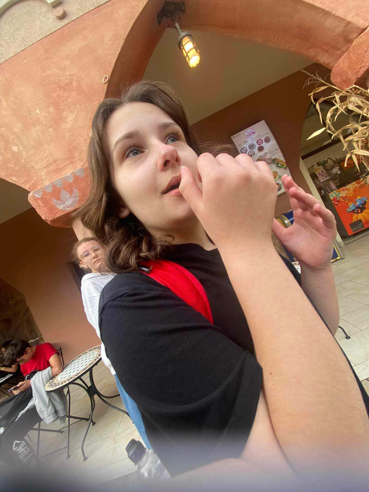
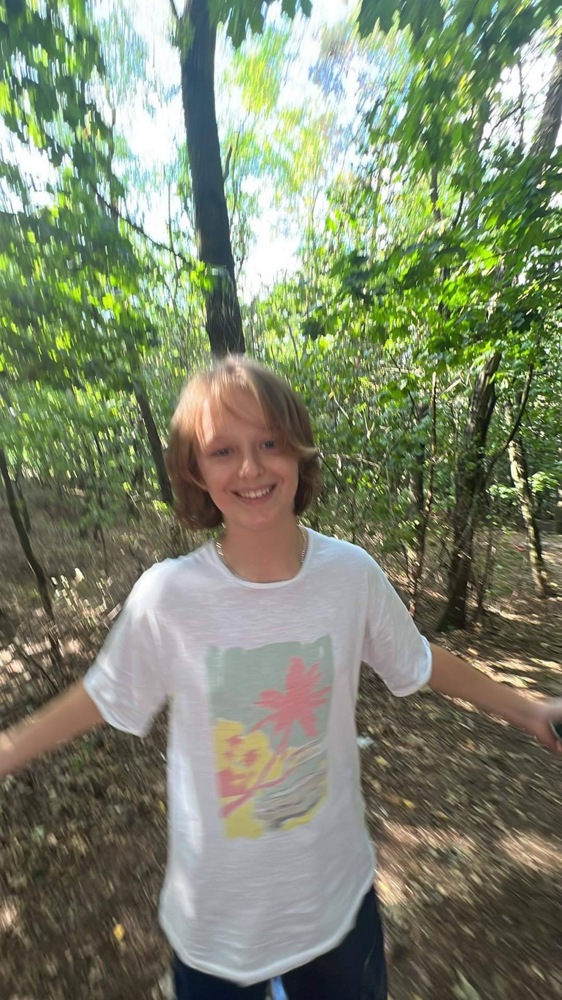
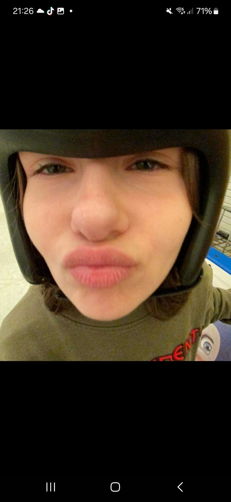

Tymek i Karina❤️
Histria ta sięga paru tygodni.

Ładna dziewczyn. Chodzi do 8a. Mądrzejsza od Tymeczka
Według niego piękna i mała. Bo niby czemu się w niej zakochał?

Według mnie pasują do siebie. Powinni zostać razem. Byliby piękną parą❤️Ale omówmy czy serio do siebie pasują. Tymek: ładny, delikatne łapki, wrażliwy, kochający. Karina: mała, kształtami twarzy pasuje do Tymka, oczy... nwm ładne?

Dziśaj (06.03.2024) Maja GrzejdŻak porwała plecak Tymka. Gdy tymo wrucił był bardzo *zaskoczony* (wcale nie). Gdy otworzył plecak miał mnustwo pociętych małych karteczek. Ale czemu? - się spytacie. Odpowiedź brzmi: ---- NIE WIEM! Ale myślę poprostu że maja zazdrości Karine Takiego ciasteczka jakim jest Tymo. Tymo się zdenerwował i ma plan aby odwalić coś :>
Osoboa odpowiedzialna za stronę dc: inoob1936